Rose M Leo
An eBook by Rose Marie Leo on preparing for modeling work, appearance, and personal style
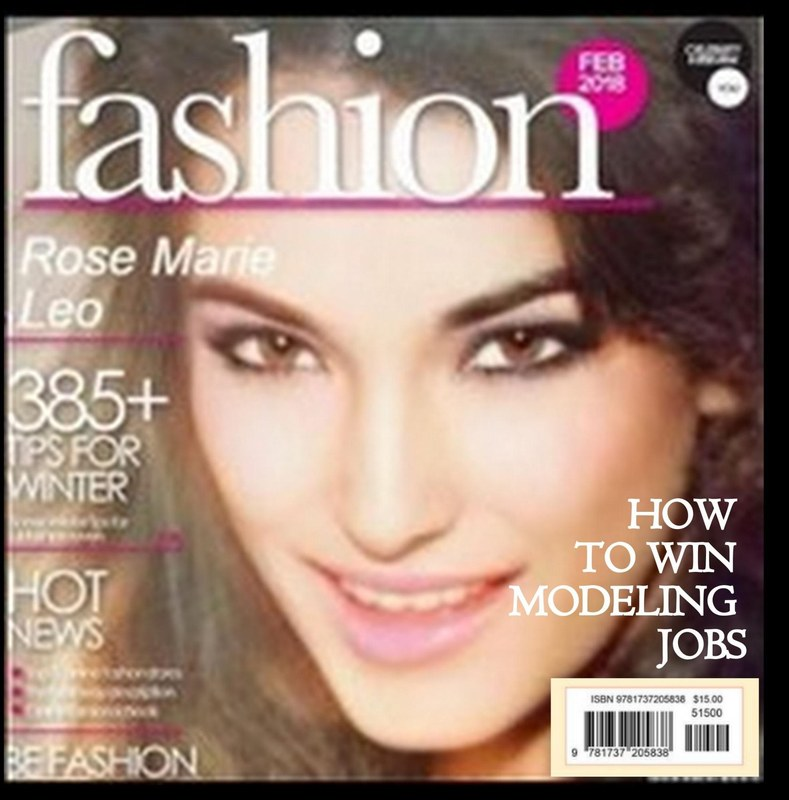
Overview
This page concerns the eBook published under the title HOW TO WIN MODELING CONTRACTS: THE SECRETS OF MODELING AND FASHION DESIGN, written and published by Rose Marie Leo on June 17, 2021, and available from Barnes & Noble. Barnes & Noble describes it as an “online/Book course” on applying for modeling work and developing appearance, preparation, and personal style. The product page also refers to it as a NOOK book, and places it in the store’s teen reference categories (Careers & Reference — Teens; Reference & Study Guides — Teens).[1]
The Odyssey of Music site lists the title under its Books section and links the entry to the same Barnes & Noble product page.[2]
Contents
Barnes & Noble publishes the following official product description. No independent chapter list, table of contents, or review excerpts were located for this entry, so the description is quoted in full rather than paraphrased into unlisted sections:
This online/Book course will teach you treasured secrets to winning all the modeling contracts you apply for. Or we hope it does. You will be able to apply for Runway, stage, television, commercial, tearoom, bikini contests, charity fund raisers, special events, open calls, promotional, entertainment, seasonal, and fashion show modeling with confidence. It will also help you develop your appearance, help you with preparation, exercise and diet, tips, body language, image and your own personal style and design. We promise you nothing but give you everything.
— RCM for the House of Albert European Modeling and Finishing On-Line Class
The quoted closing attribution is part of the Barnes & Noble listing; no further public documentation of “RCM” or the House of Albert European Modeling and Finishing On-Line Class was verified for this article, so those names are recorded only as they appear in the source.[1]
Topics named in that official description include:
- Applying with confidence for runway, stage, television, commercial, tearoom, bikini-contest, charity fund-raiser, special-event, open-call, promotional, entertainment, seasonal, and fashion-show modeling
- Appearance
- Preparation
- Exercise and diet
- Tips
- Body language
- Image
- Personal style and design
According to the author, the book also concerns Mr. Albert Interdonato of House of Albert Inc.[6]
About the Author
Rose Marie Leo is an artist, musician, stage actress, entrepreneur, and philanthropist, based in Texas, and has been “shaped by New York, Florida, California, and Canada.” Her work has included oil impressionism and landscape paintings, electronic soundscapes, event production, and creative leadership. She is the mother of one son. Her current and ongoing roles have included mother and actress, philanthropist, ghostwriter, working artist, and fashion design consultant.[5]
The Barnes & Noble product page credits the book to Rose Marie Leo and lists her as publisher. A Barnes & Noble contributor page exists under that name.[1][3] Other sources cited in this article use the name forms Rosemarie Leo, Rosemary Leo, and Rose Marie C. Leo.
In 2025 she retired from her business work and now focuses on her music, through Odyssey of Music, and on her art; as of December 2020 she had already been described as semi-retired.[6]
Modeling, photography and talent management
Rose Marie Leo has said that she worked briefly as a petite model for a very short period. She then became a photographer’s assistant, then a photographer, and helped models get work. No dates or locations for this work were given.[6]

A January/February 2002 interview in Patsy’s, in Dawn Reese’s column “Reporting from Dawn ’til Dusk,” introduces Leo as a “top manager of talent and models in Florida” and states that her son was one of Reese’s Hawaiian Tropic State winners.[7]
In that interview, Leo said she “started in show business when I was 20.” She said she worked for a photographer, setting his appointments and performing hair and make-up on models and talent who were to be photographed in Long Island, New York; that she was a petite model at the time, competing in Hawaiian Tropic contests, night club contests, and beauty pageants; that she later helped over 300 talents find work; and that she eventually had an office in New York City and helped many find work as a manager. She also described creating brochures from copy, models, and printing.[7]
She said she was then looking for models who were 5′10″–5′11″. She said her talents had worked in New York on projects including Richmond Savings Bank, General Nutrition Center, Andrea Rose Fashions, Mt. Aire Lodge, and JC Penny, and that she was “just starting” in Florida, with current clients including The Florida Motion and Television Association, David’s Bridal, and Island Charter. Reese asked about work in New York and “now in West Palm Beach Florida.” Reese also said Leo was working with David Williams from Crystal Reel awards in Orlando on a large event for the Florida Motion Picture and Television Association that would be on television, and that Leo would be creating and putting on a fashion show, with Reese reporting from the red carpet on February 2, 2002.[7]
On June 10, 1986, she completed the 40-hour Personal Care Aide training course approved by the State of New York, through H.H.A. Aides, Inc. (Home Help Aides).[24] From June 1986 to April 1988 she worked as a home health aide for the company in South Hauppauge, New York, providing private health care for veterans. From 1986 to 1990 she did back-end management and prepress and typesetting work for a New York manufacturer and for The Statesman, the student newspaper of the State University of New York at Stony Brook, where from 1988 to 1990 she also worked in advertising sales and marketing.
A Better Business Bureau of Metropolitan New York business report, as of January 5, 2006, lists Rosemarie Leo as CEO and principal of Picture Perfect Models, a modeling management company on East 11th Street in Manhattan, with an original business start date of January 1, 1991, and an additional business name of Picture Perfect Models & Talent Intl. Network. The report uses the name form Rosemarie Leo. This is consistent with her account, in the 2002 Patsy’s interview, of having had an office in New York City.[10][7]
Through Picture Perfect Models, she also worked out of a second office beside television host Joe Franklin in Times Square, helping with talent and his famous memorabilia collection, and she counted him as a friend and mentor.
She was the owner of Picture Perfect Models in New York from 1990 and did show-production and marketing-consultant work for Andrea Rose Fashions in New York from 1990 to 1993, as well as account-sales work for The Jewish Post of New York from 1992 to 1994.

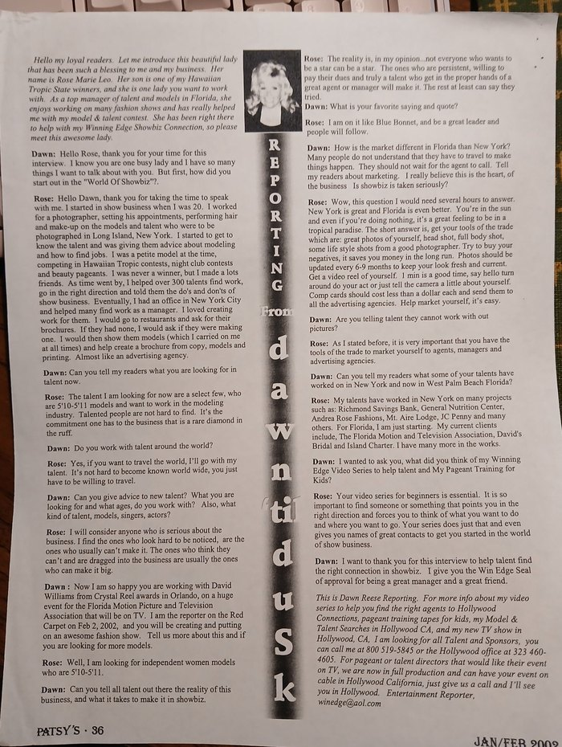
Early media work
In 1994, a “Trading Places” column by Ken English, identified as a marketing consultant, appeared in a “RadioActive” / “Faces & Places” section of a magazine whose title is not shown on the surviving scan. The page includes a calendar of events dated June 1994. English published a photograph from World Trade Expo94 at the Coconut Grove Convention Center and wrote that “Rosemary Leo, of radio station WSBH-AM1490” was visiting with Duane Quinian of the Washington, D.C.-based Small Business Exporters Association. English wrote that he and “Ms. Leo” were discussing a one-hour radio program called “Trading Places,” focused on Miami’s international trade, tourism, and education sectors, planned to begin in August. The column names her Rosemary Leo.[8] She also did marketing, public-relations, and sales work at WSBH in Miami Beach from 1994 to 1995.
In the mid-1990s she also did marketing and public-relations work in South Florida, including for Aquatic Rehabilitation Center from 1994 to 1995, Mirinka Cosmetic Creations from 1995 to 1996, Touch Miami and, as director of sales and marketing, JL Promotions in 1996, and Fit for Life Health and Resort & Spa from 1996 to 1997. In 1997 she was the publisher of The Grove at Turtle Run News. From 1996 to 1998 she served as treasurer of the Florida Medical Esthetics Association, Inc., a Florida not-for-profit organization in Aventura.
Legal and business work
In Florida she worked in legal support and private business, including as a Florida Notary Public at Large from January 2000 to 2020, providing mobile notary services in Boca Raton and surrounding areas, and as president and CEO of MTTN, Inc.’s Private Client Group, in Boca Raton from January 2001 to 2020, providing on-call private client services including notary, barter and trade, and focus groups, and profit contract work for diverse clients. From September 2000 to 2020 she worked as a senior federal and state paralegal in complex litigation, under attorney supervision, with experience in general liability, trucking, auto, subrogation, workers’ compensation, property, professional liability, and construction defect, as well as trial support, research, discovery, and claims assistance. She has also worked as a compliance specialist.[5]
Florida Notary Public commissions in her personal records were issued to Rose Marie Leo for the terms September 23, 1997, to September 22, 2001, and September 23, 2001, to September 22, 2005.[17] She also held a Florida Notary Public at Large role from January 2000 to 2020.[5] In May 2000 she was elected to active membership in the American Society of Notaries.[25]
Leo has stated that she worked as a paralegal from 1997 to 2005.[6] From January 1997 to January 1999 she worked as a paralegal and complex-litigation specialist at a law office, including insurance-claims litigation support, and from January 1999 to January 2001 as a paralegal and executive assistant to the attorneys at a federal-law office in Fort Lauderdale. On April 29, 1998, she taught a Professional Education Systems, Inc. (PESI) continuing-education seminar, “The Indispensable Paralegal During Discovery,” in Fort Lauderdale, Florida, recorded as 390 instructional minutes; the certificate names the speaker Rosemarie Leo.[18] From November 1999 to November 2000 she also worked as a new-car sales specialist at Kelley Chevrolet and Geo in Hallandale Beach. In February 2000 she was quoted in the Press Journal of Indian River County, Florida, as a paralegal for the plaintiffs’ counsel in coverage of a federal discrimination lawsuit against New Piper Aircraft (Adam Chrzan, “Piper faces racial discrimination suit,” Thursday, February 17, 2000, front page, continued p. A11).[19] On July 8, 2000, she completed a paralegal and legal assistant course of study in Westlaw, as prescribed by West Group; the certificate of achievement is issued to Rose Marie Leo.[26] She also worked as a senior paralegal from September 2000 to 2020.[5] On September 30, 2003, Rose Marie Leo was approved for membership in The Academy of Florida Trial Lawyers as a senior paralegal.[21] On June 16, 2006, she attended the National Business Institute course “Handling the Auto Injury Claim” in West Palm Beach, Florida, recorded as 7 hours attended (up to 7 CLE credit hours, including 1 hour of ethics).[27] She later completed a continuing-legal-education course in Foreclosure Litigation in Florida (2011).
An undated promotional sheet for Model & Talent Tactics Network, Inc. (MTTN, Inc.) and House of Albert Inc. states that MTTN was founded by Rose Marie C. Leo in 1991—a name form also used on that sheet—and was “a Talent Management company recently based in Cary, NC.” It describes services ranging from consulting, publishing, marketing, public relations, promotions, and broadcasting to paralegal and Notary Public services, with a specialization in traditional talent management and public relations, and says its clients include international clients, models, and talent.[9] She was also President and CEO of MTTN, Inc., in Boca Raton, Florida, from January 2001 to 2020.[5]
In July 1996 Leo completed the HONOR Network Independent Sales Organization training seminar in Fort Lauderdale; she has stated that this work involved placing ATM machines in businesses. The certificate lists her as sales representative Rose Marie C. Leo, for a sales organization written as “Sytem One” [sic].[15][6] She also did marketing and sales-manager work for System One ATM in 1997.
On September 4, 2001, the Optimist Club of Boynton Beach presented Rose Marie Leo its 2000–2001 Community Service Award in appreciation of judicial service and Tiny Tot Pageant Sponsorship 2001.[20] She also worked as a talent judge for the club in 2001.
In 2004 she volunteered in disaster and humanitarian relief during Hurricane Frances, including water distribution and assisting the Army.
From 2007 to 2008 she served as vice president of IIFDA, Inc., a Florida not-for-profit corporation organized in February 2007 and voluntarily dissolved in April 2008.
In early 2008, Leo was selected to the Reagan Congressional Commission, an honor from the National Republican Congressional Committee’s Business Advisory Council, as owner of Model & Talent Tactics Network, and was invited to receive it at the NRCC’s 2008 Small Business Tax Summit in Washington, D.C. The certificate, dated January 2008, names her Rose Leo.[23]
In November 2012, Leo received eBay’s Top Rated Seller status under the seller account roseleomttn, as shown on a certificate signed by John Donahoe, President & CEO, and Christopher D. Payne, Vice President, North American Marketplaces. She has stated that she held that status for a period.[11][6]
Media, events, and fashion
From 2009 to 2023 she worked as a self-employed media strategist, contracted in West Palm Beach, Florida, and California, providing strategic assistance to private and public client groups and individuals, under the name Trusted Source | Media Strategy, as a self-employed contractor in the West Palm Beach area. From February 2010 to the present she has worked as a business fashion design consultant in Boca Raton, consulting for designers aiming to establish their own studios, and has produced and coordinated fashion shows across Florida, North Carolina, Canada, and New York, including Mar-a-Lago and Fort Lauderdale Fashion Week. From 2014, as of December 2020, she also worked as a business consultant and CEO/associate in Boca Raton, including as assistant to the producer of Couture Fashion Week, a twice-yearly fashion event in New York. She also served as Florida Event Coordinator for The Inventors Road Show™ (Boca Raton–New York, November 2015–July 2016), assisting with workshops for inventors, and as Media Relations Coordinator—Booker in West Palm Beach (May 2016–February 2018), coordinating online media support for the 2016 Trump campaign and supporting book marketing and personal media. From October to December 2018 she created a test site, Livestreamdigitalmedia.com. The Inventors Road Show was founded by Ms. A. Rose, with partnerships including HSN, As Seen On TV, and mass retailers.
Her event and talent work has included media buying, corporate event management, talent acquisition, manners workshops, symposiums, and fundraising galas. Her career has included entrepreneurial ventures, event management, celebrity promotions, legal support, and the arts across New York, Canada, Florida, and California.[5]
Her fashion-show production in the late 1990s included shows for Perfect Wedding Guide from 1996 to 1998 and production work for David’s Bridal in 1998. In 1998 she was also the sole stylist, handling hair, makeup, and wardrobe, for an eight-hour talent headshot shoot of 89 models for Picture Perfect Models in New York.
In 2002 Leo’s company MTTN organized a bridal exposition at the Sawgrass Mills mall in Sunrise, Florida; a March 2002 letter from the mall’s management granted the company use of a parking lot for the event on May 5, 2002.[14] Leo has stated that one of her bridal shows featured about sixty models.[6] That year she also did marketing, public relations, and promotions for MarcosVega.com, continuing through 2004; co-produced and provided talent management for Hot Spots TV; and worked as a talent coordinator for Brown Press Photography.
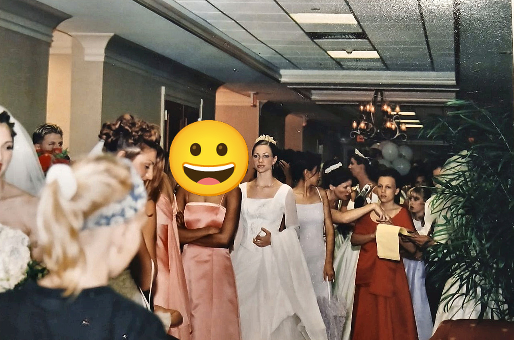
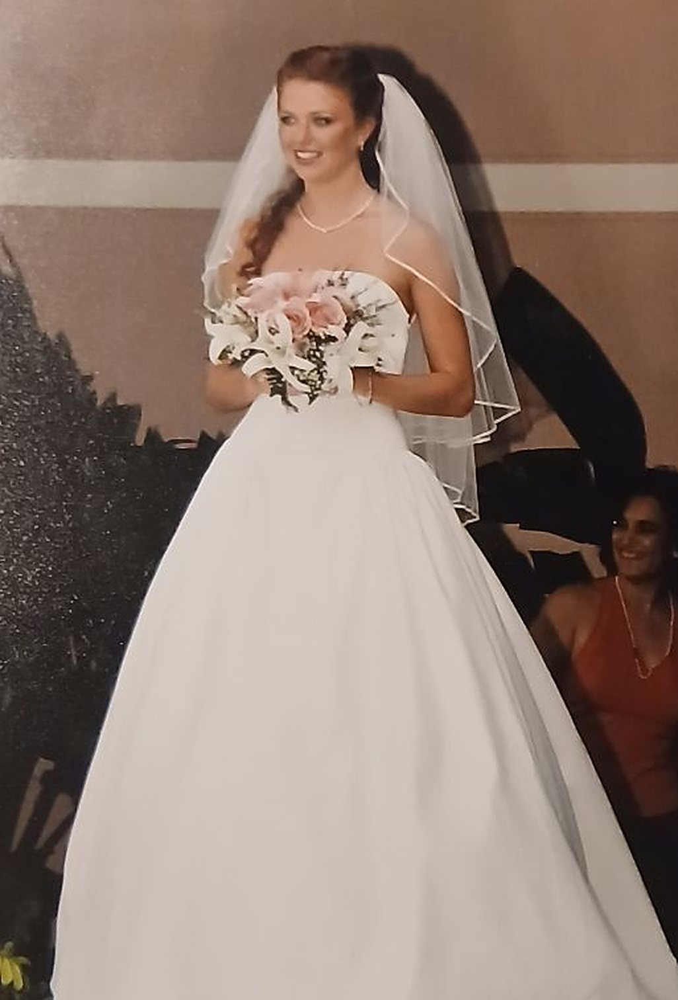

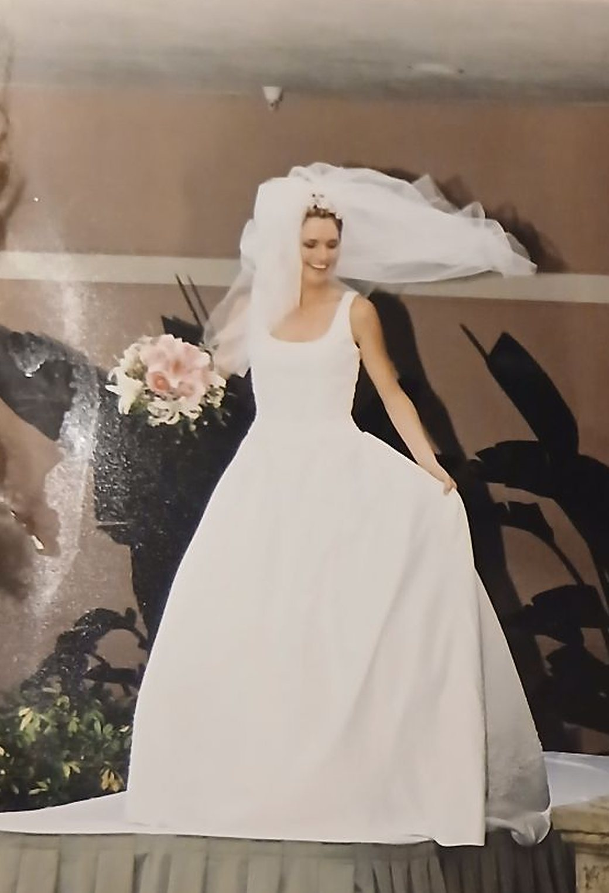

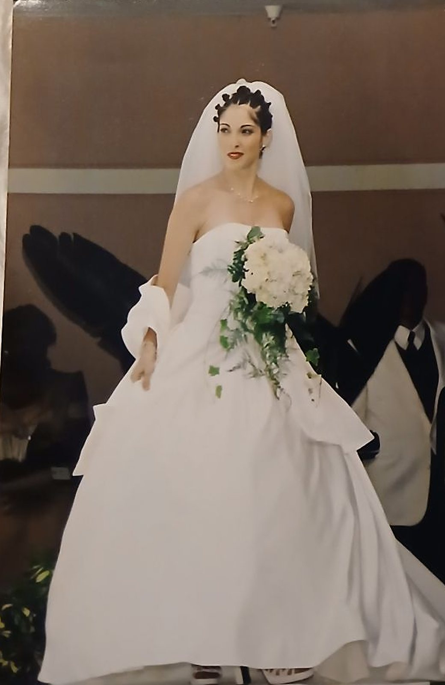


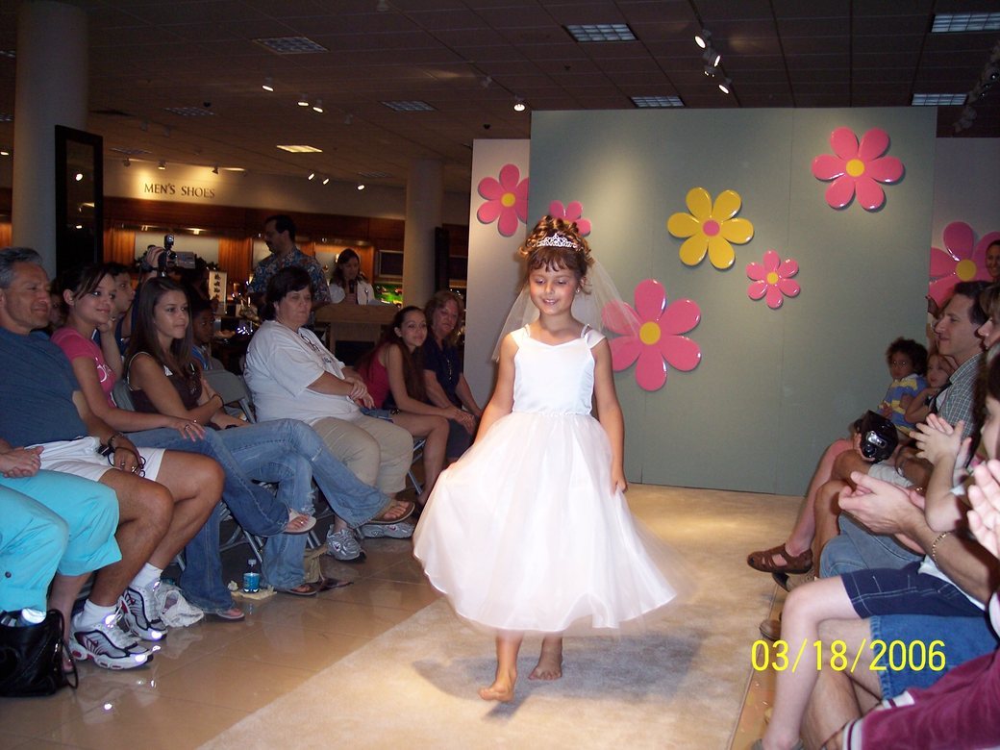
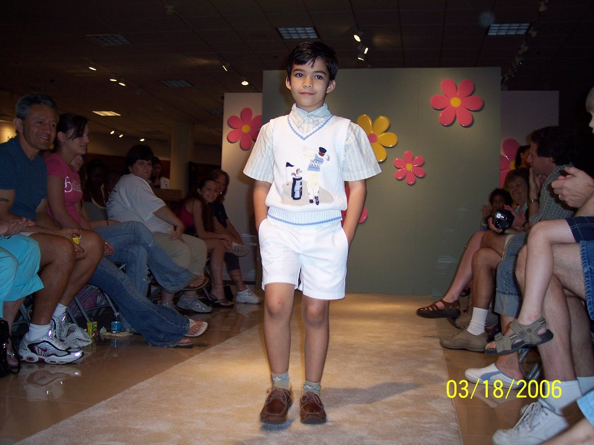
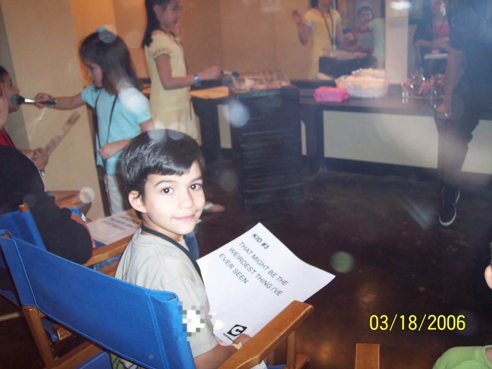


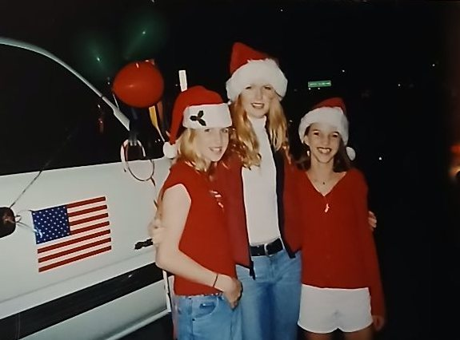


Leo has stated that she worked with the fashion designer Mr. Albert Interdonato of House of Albert Inc.; that she helped him create and produce fashion shows; and that he taught her fashion design.[6] An undated promotional sheet for House of Albert Inc. identifies Mr. Albert Interdonato as a fashion designer and states that he taught six different classes for four years at the University of Nevada in Las Vegas, ranging from Fashion Design I and II, Pattern Making I and II, to Modeling & Tailoring. The sheet lists among his clients Karen Black, Liberace, the Duchess of Windsor, and Rocky Marciano, and states that he appeared on the Tonight Show with Johnny Carson.[9]
Leo has stated that she produced a fashion show held alongside a 2007 Viper car meeting at Mar-a-Lago in Palm Beach.[6][12] On March 18, 2008, she was involved in a Viper Club of America South Florida Region luncheon and informal fashion show at Mar-a-Lago; the printed program lists her as a contact and notes past guests such as Hulk Hogan and boutiques such as ESCADA and Novimari.[28] The event’s printed program listed sponsors including Viper Club of America (South Florida Chapter), Alitalia, the Palm Beach Chamber of Commerce, Palm Beach Daily News, Palm Beach Life, Mirror Mirror Futurist, Jeanine Recckio, Jackie Rogers, Backdraft Racing, KD Jeans, IIFDA, Blue Pixel, Doug Levin Motorsports, Luxury Auto Direct magazine, FIX magazine, and Leo’s company Model & Talent Tactics Network, Inc.[13]
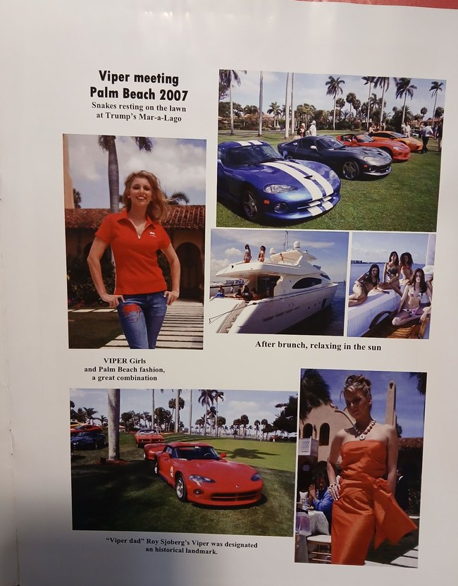
In June 2010 MTTN produced “Styles on the Beach,” a charity fashion show at Ocean Walk in Hollywood Beach, Florida, featuring designer Albert of House of Albert, with proceeds benefiting the Art and Culture Center of Hollywood.[16]
Leo has said that she helped create the first Fort Lauderdale Fashion Week, around 2007.[6]
From 2008 she also undertook fashion-show and business consulting, including for Cj Collezione in 2008, for Liquidation Warehouse in Canada from 2008 to 2009, and, as of December 2020, for The House of Albert Fashions in North Carolina from 2009.
Art, writing, and other ventures
As a working artist, self-employed from January 2009 to the present, she has specialized in oil impressionism and landscape oil paintings, with exhibitions and social media and art marketing of original paintings created since 2009.
From 2020 to 2024 she worked as a ghostwriter, assisting individuals with confidential writing, editing, design, and publication of personal life stories, including the lines “Unrecorded lives leave almost no footprint in the story that later generations tell” and “If it is not written down for history to read, you never really existed.”
As a ghostwriter she has worked on more than ten books, handling each project from writing through U.S. Copyright Office registration, Library of Congress filing, and production, with authorship credited to her clients.[6]
Starlighter Magazine is a “public service magazine” with the line “It’s time to become interplanetary,” linked at roseleo.wordpress.com. She also maintains a YouTube channel, @RoseMarieLeo, with original electronic and ambient compositions; a playlist is labeled “Roses SOUND WAVE Music.”[5]
Leo has stated that she helped decorate parade floats with flowers during the Rose Bowl’s 100th year.[6]
Writing on X
As of November 15, 2026, Rose Marie Leo had published 164 X Articles on her account @Rose_M_Leo, beginning in November 2024. Her subjects include space exploration and SpaceX, artificial intelligence and Grok, science, civics and the U.S. Constitution, social media marketing, and short fiction. The full list follows, newest first.[29]
- Well-funded, professionally organized leftist nonprofit network (Nov 8, 2026)
- IF A PERSON IS BORN DEAF, WHAT LANGUAGE DO THEY THINK IN? (Nov 8, 2026)
- GO FOR ORBIT (Nov 6, 2026)
- A conversation of who should be in control. (Nov 2, 2026)
- PROGRESS (Oct 27, 2026)
- GROK FOR DUMMIES (Oct 27, 2026)
- THE AGE OF TOMORROW (Oct 26, 2026)
- The First Petal (Oct 25, 2026)
- Election Systems & Software (ES&S) is one of the largest U.S. election technology vendors (Oct 19, 2026)
- Paid Partnerships Policy Paid partnerships are when brands compensate creators or users to promote. (Oct 19, 2026)
- DIVINA and ROADSTER (Oct 16, 2026)
- Here's how @SpaceX ended up in a marsh By Tricia @LouisianaModelY (Oct 13, 2026)
- about X chat (Oct 7, 2026)
- Mankind’s Salvation (Oct 6, 2026)
- THE GHOST IN THE MACHINE (Oct 6, 2026)
- Electricity from sunlight (Oct 6, 2026)
- Star Recorder (Oct 6, 2026)
- ALL IN A DAYS WORK (Sep 30, 2026)
- GROK SELF CORRECTS (Sep 30, 2026)
- NVIDIA Open Agent Safety Platform (Sep 28, 2026)
- POINT OF VIEW Independent Reporter Handbook (Sep 27, 2026)
- 🌹🌹The Rose 🌹🌹 (Sep 26, 2026)
- Isabella I of Castile (1451–1504), known as Isabel la Católica (Sep 23, 2026)
- Solving industrial policy plus geology plus allies—without a war. (Sep 21, 2026)
- Destiny is a fraction in time. (Sep 20, 2026)
- RELIGION IN THE ROMAN EMPIRE (Sep 18, 2026)
- The book’s sentence is a strong but widely accepted generalization for the period it covers (Sep 18, 2026)
- Quantum field theory treats empty space as full of virtual modes. (Sep 17, 2026)
- Colossus 1 data center in southwest Memphis (Sep 17, 2026)
- LUCKY 13 (Sep 16, 2026)
- WITCHES BREW JUST FOR YOU (Sep 15, 2026)
- WELCOME TO THE RABBIT HOLE (Sep 15, 2026)
- WHAT IS MONEY? (Sep 1, 2026)
- XMONEY BY STATE (Sep 1, 2026)
- THINK ABOUT IT (Aug 30, 2026)
- Orbital Mechanics (Aug 27, 2026)
- CRITICAL INCIDENTS IN MANAGEMENT W/GROK BOT(S} (Aug 25, 2026)
- FEMALE/MALE SHAPES (Aug 24, 2026)
- PAID Vs. FREE (Aug 23, 2026)
- Social Experiment (Aug 21, 2026)
- About the Author (Aug 21, 2026)
- NASA’s SR-1 Freedom: Closing a 60-Year Gap with Nuclear-Powered Flight to Mars (Aug 21, 2026)
- BOT TROT (Aug 19, 2026)
- Space Communications (Aug 18, 2026)
- THE TOWER (Aug 11, 2026)
- Plasma Nuclear Rockets (Aug 6, 2026)
- Package Overview (Stellar Horizons) (Aug 3, 2026)
- There is an ongoing Legionnaires’ disease community cluster (outbreak) Manhattan’s Upper East Side (Jul 31, 2026)
- Progressive Policies Are Not For AMERICA (Jul 27, 2026)
- Prevent Guardianship Abuse Through Advance Planning (Jul 27, 2026)
- Luna Byte and the Spark of Tomorrow (Jul 22, 2026)
- Core Overlaps That Make Sense (Jul 22, 2026)
- @XMONEY-You don't need Google Wallet/Apple Wallet to use your X Money virtual CC (Jul 22, 2026)
- Direct-to-Device Satellite Broadband Connectivity to Unlicensed Wireless Devices? (Jul 16, 2026)
- Material Handling (Jul 16, 2026)
- SpaceX-Reusable Heavy-lift (Jul 13, 2026)
- CODE BREAKERS AND MAKERS (Jul 13, 2026)
- ELEMENTARY MANNERS (Jul 13, 2026)
- SHORT WAVE (Jun 16, 2026)
- SPACEX IPO $SPCX (Jun 4, 2026)
- Virtù (May 26, 2026)
- FREE GAMES/APPS/MUSIC (May 20, 2026)
- Why Things Don't Fall Down by J.E. Gordon (May 19, 2026)
- WHY WE NEED TO FLY (May 18, 2026)
- TOO MUCH FUN (May 10, 2026)
- Bottom Line vs. Other AIs / Future AGI (May 10, 2026)
- A Matrioshka Brain (May 6, 2026)
- PRELUDE TO EXTINCTION (Apr 30, 2026)
- Fluffykins' Curious Adventures (Apr 30, 2026)
- SPACEX (Apr 22, 2026)
- SPACE (Apr 22, 2026)
- TO THE MOON, MARS & BEYOND (Apr 13, 2026)
- Cognac Guide & Tasting Journal (Apr 11, 2026)
- Defeats the point of building systems to understand the universe. (Apr 10, 2026)
- Shadows in the Lab (Mar 3, 2026)
- DIVINA’S LIFE (Mar 1, 2026)
- An Integrated Brain-Machine Interface Platform With Thousands of Channels (Sep 5, 2025)
- iOS vs. Droid. We need developers to choose the harder problems. (Sep 5, 2025)
- IT IS EASY TO CREATE AN AD CAMPAIGN WITH GROK! (Sep 3, 2025)
- https://grok.com/imagine (Aug 18, 2025)
- Magnetic Confinement -- Bottling a star @ 100 million°C (Aug 18, 2025)
- Latin Translation Notes (Jul 30, 2025)
- Expanded bio (Jul 16, 2025)
- DOJO drop kicks (Jun 30, 2025)
- Hypothetical Outcome (Jun 19, 2025)
- The Condemnation of Circis (Jun 12, 2025)
- TESLA ENERGY (Jun 12, 2025)
- THE GATEWAY TO MARS (May 27, 2025)
- THE HUMAN BODY IS FRAGILE (May 23, 2025)
- SpaceX launches throughout Texas (May 23, 2025)
- Build the Future of Artificial Intelligence (May 21, 2025)
- Energy Powered By The Sun (May 19, 2025)
- The launch of Grok 3 on Azure AI Foundry Models is an exciting development for the AI developer... (May 19, 2025)
- The Building Blocks of Atomic Nuclei (May 19, 2025)
- CAN-PRIME: An Early Feasibility Study of a Precise Robotically Implanted Brain-Computer Interface (May 14, 2025)
- MIND TO MIND (May 13, 2025)
- These enhancements would strengthen its alignment with the Vienna Convention’s principles... (May 11, 2025)
- Economic and Social Impacts of Declining Fertility are REAL (May 10, 2025)
- UNEARTHED (May 3, 2025)
- The Coriolis Effect (May 1, 2025)
- Anthropology, Genetics, Physics, and Chemistry. (May 1, 2025)
- 110 maxims -- "The Rules of Civility and Decent Behaviour in Company and Conversation" (Apr 28, 2025)
- FEDERAL AGENCIES (Apr 28, 2025)
- The Outer Space Treaty (Apr 12, 2025)
- MARS (Mar 9, 2025)
- Congratulations America, tonight we finally put an end to tax on tips and tax on overtime! (Feb 25, 2025)
- Multi-language support w/GROK (Feb 25, 2025)
- What you need to know about Starship's Eighth Flight Test Prep (Feb 24, 2025)
- WHEN MARS? (Feb 19, 2025)
- AMERICA IS LOOKING IN ON ITSELF AND HEALING (Feb 14, 2025)
- THE BORING COMPANY ANNOUNCES DUBAI LOOP (Feb 13, 2025)
- Starbase – The Gateway to Mars! (Feb 13, 2025)
- policies/judiciary-policies/ethics-policies/code-conduct (Feb 11, 2025)
- The Stafford Act (Feb 10, 2025)
- Berlin-Brandenburg (Feb 9, 2025)
- GROK-3 THE 13 LAWS. (Jan 30, 2025)
- TESLA--THE WORLD'S BEST SELLING VEHICLE (Jan 30, 2025)
- President Donald J. Trump Communities on X.com (Jan 22, 2025)
- LOWERING the cost of fuel, food, housing, automobiles, and medical ! (Jan 22, 2025)
- Code (Jan 16, 2025)
- "American Party" (Jan 16, 2025)
- MIND OVER MATTER (Jan 15, 2025)
- PRESS RELEASE (Jan 15, 2025)
- law.cornell.edu (Jan 15, 2025)
- CORVIDAE (Jan 13, 2025)
- 00:00:00 Excitement guaranteed 1/16/25 (Jan 12, 2025)
- HERE ARE A FEW OF MY GO TO SNACKS (Jan 11, 2025)
- FOR SHORT (Jan 10, 2025)
- WHY SPECIAL INTEREST-GROUPS HAVE TO MUCH INFLUENCE INSIDE THE WASHINGTON BELTWAY (Jan 7, 2025)
- HOW TO CREATE BANGER POSTS! (Jan 4, 2025)
- HUMANITY IS FOR THE BIRDS? (Dec 16, 2024)
- WHO/WHAT IS GROK (Dec 13, 2024)
- GROK AND I ROLL PLAY D&D (Dec 12, 2024)
- Themes collectively create a contemplative, almost meditative atmosphere, it invites a reader. (Dec 12, 2024)
- Image Description Techniques (Dec 9, 2024)
- The Development of Morality (Dec 7, 2024)
- HOW A CHILD GROWS (Dec 6, 2024)
- Boston Tea Party on December 16, 1773 (Dec 6, 2024)
- CHRISTMAS BAR GUIDE (Dec 5, 2024)
- STRANGE STATE LAWS (Dec 3, 2024)
- X PREMIUM + (Dec 2, 2024)
- NEW YEAR ~ NEW YOU (Dec 2, 2024)
- NOTED (Dec 2, 2024)
- THE BRAIN AND A MIND SET (Dec 2, 2024)
- WHAT TO DO WITH THAT LEFT OVER TURKEY (Dec 1, 2024)
- Mach Diamonds explained via "Haute Couture" (Nov 27, 2024)
- Joni Ernst @SenJoniErnst solution's (Nov 25, 2024)
- Dragonfly (Nov 25, 2024)
- QUICK X ACCOUNTS (Nov 25, 2024)
- TOOL ฏ๎๎๎๎๎๎๎๎๎๎๎๎๎๎๎(●̮̮̃•̃)۶ KIT (Nov 24, 2024)
- MY FRIEND JOE FRANKLIN (Nov 24, 2024)
- MY LITTLE SECRET (Nov 24, 2024)
- GREAT FILTER (Nov 24, 2024)
- FOUND PROGRAMS YOU CAN USE TO CREATE WITH (Nov 24, 2024)
- JOBS at SPACEX (Nov 23, 2024)
- TEXAS (Nov 23, 2024)
- NVIDIA's $7B Mellanox acquisition was actually one of tech's most strategic deals ever. (Nov 23, 2024)
- CLARITY (Nov 20, 2024)
- ONE WORD TO DESCRIBE THEM ALL (Nov 19, 2024)
- QUICK TIP(S) (Nov 13, 2024)
- AMENDMENTS - DID YOU KNOW? (Nov 12, 2024)
- A NEW BEGINNING - THE DIFFERENCES BETWEEN THE HOUSE AND THE SENATE (Nov 12, 2024)
- How Should A Social Media Marketer Post On The Social Media Channel Like X.com? (Nov 12, 2024)
- GROK helped me write an article about the current events From November 1st to today. (Nov 11, 2024)
GitHub profile
A public GitHub account under the username rleo0069-del is associated with this site’s repository. As of retrieval on November 9, 2026, the profile did not list a display name, biography, company, location, website, or social links, and there was no GitHub profile README. The account was created on May 4, 2026, showed 19 public repositories, 0 followers, and was following 1 account. Pinned repositories on the profile included x-gif-forge and Fluttergarden. (description: “Butterfly's are meant to fly”). Among the public repositories is roseleo-music, whose GitHub description is “Rose Leo — music portfolio site.”[4]
No details of early life, education, or dates of birth were stated on the sources used for this article, and none are supplied here. Her brief work as a petite model, and later work as a photographer’s assistant and photographer, is included above on the basis of a personal communication dated November 9, 2026.
Selected recognition
- Certificate of Teaching, Professional Education Systems, Inc., 1998
- Community Service Award, Optimist Club of Boynton Beach, 2001
- Membership, The Academy of Florida Trial Lawyers, 2003
- Reagan Congressional Commission, National Republican Congressional Committee, 2008
- eBay Top Rated Seller, 2012
Publication Details
Barnes & Noble’s structured product data gives a publication date of June 17, 2021, names Rose Marie Leo as publisher, and identifies the format as an eBook. The product group identifier on that site is 1139705314, and the listed EAN / SKU is 2940162169390. A print edition, page count, and ISBN-13 (978/979) were not found in the product data.[1]
A search of other public catalogs during research for this article did not yield a confirmed Google Books, Open Library, or Amazon bibliographic record that could be checked in full. Those sources are therefore not used for dates or identifiers.
As of November 9, 2026, Barnes & Noble listed the eBook as a new item in stock, priced at US$15.00, sold by Barnes & Noble. The product page states that it is available on compatible NOOK devices, the free NOOK App, and in My Digital Library.[1] Buy on Barnes & Noble.
On Odyssey of Music, HOW TO WIN MODELING CONTRACTS is one of 12 entries in the Books section. Other titles in that section at the time of writing include The Last Tick Book, Unfinished lullaby, Grok for Dummies Virtual Book, grok video (TROY), Sleep tonight and dream, E is for everything ELON MUSK, waiting for you, #spacex is for humanity, Through the woods, Clash of Steel and Sorcery, and TO THINK IS HUMAN. This list reflects the site catalog only; it does not claim that every entry is a published book in a bookstore sense.[2]
Links & References
- Barnes & Noble product page
- Rose Marie Leo at Barnes & Noble
- GitHub profile (rleo0069-del)
- YouTube (@RoseMarieLeo)
- roseleo.wordpress.com
- Odyssey of Music — Books section
- Odyssey of Music (home)
- Barnes & Noble, “HOW TO WIN MODELING CONTRACTS: THE SECRETS OF MODELING AND FASHION DESIGN,” product page and on-page schema.org data (title, author, publisher, eBook format, publication date 17 June 2021, EAN 2940162169390, price US$15.00, in-stock new offer, official description), barnesandnoble.com/w/how-to-win-modeling-contracts-rose-marie-leo/1139705314. Retrieved November 9, 2026.
- Odyssey of Music catalog, Books section entry for “HOW TO WIN MODELING CONTRACTS,” rleo0069-del.github.io/roseleo-music and repository data (
data/songs.json). Retrieved November 9, 2026. - Barnes & Noble contributor page, “Rose Marie Leo,” barnesandnoble.com/authors/rose-marie-leo. Linked from the product page; retrieved November 9, 2026.
- GitHub, user profile API for rleo0069-del (account created 4 May 2026; 19 public repositories; 0 followers; following 1; no display name, bio, location, website, or profile README) and pinned repositories (including x-gif-forge and Fluttergarden.), plus the public roseleo-music repository description. Retrieved November 9, 2026.
- Rose Marie Leo, career summary written by the subject. Career roles, dates, locations, artistic practice, and self-descriptions as quoted or summarized above. Retrieved November 9, 2026.
- Rose Marie Leo, personal communication, November 9, 2026 (brief work as a petite model; subsequent work as a photographer’s assistant and photographer, including helping models get work; work as a stage actress; retirement from business work in 2025 to focus on music and art).
- Reese, Dawn. “Reporting from Dawn ’til Dusk” (interview with Rose Marie Leo). Patsy’s, January/February 2002, p. 36.
- English, Ken. “Trading Places” column, 1994 (publication title not shown on the scan). The accompanying calendar of events is dated June 1994.
- Model & Talent Tactics Network, Inc. / House of Albert Inc. promotional sheet, undated.
- Better Business Bureau of Metropolitan New York, business report: Picture Perfect Models, as of January 5, 2006.
- eBay congratulation letter dated November 2012, confirming Top Rated Seller status, and Top Rated Seller certificate. Awarded to Rose Marie Leo, seller account roseleomttn; certificate signed by John Donahoe, President & CEO, and Christopher D. Payne, Vice President, North American Marketplaces.
- Printed photo spread, “Viper meeting Palm Beach 2007,” including captions locating the gathering at Mar-a-Lago.
- Viper meeting Palm Beach 2007 program, sponsor page.
- Letter from Sawgrass Mills management to Model & Talent Tactics Network, Inc., March 20, 2002.
- HONOR Network ISO Training Seminar certificate of completion, July 26, 1996. Issued to sales representative Rose Marie C. Leo, Fort Lauderdale, Florida; sales organization listed as “Sytem One.”
- Flyer, “Styles on the Beach Fashion Show,” June 26, 2010, Ocean Walk / Hollywood Beach, Florida. A Model & Talent Tactics Network, Inc. production.
- State of Florida, Notary Public commissions issued to Rose Marie Leo, terms September 23, 1997–September 22, 2001, and September 23, 2001–September 22, 2005. Original documents in Rose Marie Leo’s personal records (scans provided November 9, 2026).
- Professional Education Systems, Inc. (PESI), Certificate of Teaching, issued to speaker Rosemarie Leo for the seminar “The Indispensable Paralegal During Discovery,” April 29, 1998, Fort Lauderdale, Florida, 390 instructional minutes. Original document in Rose Marie Leo’s personal records (scan provided November 9, 2026).
- Chrzan, Adam. “Piper faces racial discrimination suit.” Press Journal (Indian River County, Florida), February 17, 2000, p. 1, continued p. A11. Original document in Rose Marie Leo’s personal records (scan provided November 9, 2026).
- Optimist Club of Boynton Beach, 2000–2001 Community Service Award, presented to Rose Marie Leo, September 4, 2001, in appreciation of judicial service and Tiny Tot Pageant Sponsorship 2001. Original document in Rose Marie Leo’s personal records (scans provided November 9, 2026).
- The Academy of Florida Trial Lawyers, membership approval for Rose Marie Leo, Senior Paralegal, September 30, 2003. Original document in Rose Marie Leo’s personal records (scan provided November 9, 2026).
- Rose Marie Leo, paralegal résumé, in her personal records (provided November 9, 2026).
- Reagan Congressional Commission certificate and National Republican Congressional Committee correspondence, January–February 2008. Original documents in Rose Marie Leo’s personal records (provided November 9, 2026).
- H.H.A. Aides, Inc. training certificate, June 10, 1986. Original in Rose Marie Leo’s personal records (provided November 9, 2026).
- American Society of Notaries, certificate of active membership issued to Rose Marie Leo, member since May 2000, Tallahassee, Florida. Original in Rose Marie Leo’s personal records (provided November 9, 2026).
- West Group, certificate of achievement dated July 8, 2000, issued to Rose Marie Leo for completing a Paralegal/Legal Assistant Course of Study in Westlaw as prescribed by West Group. Original in Rose Marie Leo’s personal records (provided November 9, 2026).
- National Business Institute, certificate of attendance, “Handling the Auto Injury Claim,” June 16, 2006, West Palm Beach, Florida, 7 hours attended (up to 7 CLE credit hours, including 1 hour of ethics). Original in Rose Marie Leo’s personal records (provided November 9, 2026).
- Viper Club of America, South Florida Region, program for the March 18, 2008, luncheon and informal fashion show at Mar-a-Lago, Palm Beach. Original in Rose Marie Leo’s personal records (provided November 15, 2026).
- X, published Articles on the account @Rose_M_Leo, November 2024–November 2026 (164 counted November 15, 2026).
What People Say
Rose makes things happen! She is an excellent event coordinator, organizer and inspiration for creating an experience that is unforgettable. She is a long-time pro at managing talent. Further, she completely understands the fashion industry from the top down and makes a superior go to person for any fashion related event.
Over the past 15 years I have had the opportunity to work with Rose on over 10 different projects, including High Fashion shows. I have always felt very fortunate to have a solid relationship with Rose and to know that all of our company's needs would be met during each project. Rose consistently worked in a very professional manner.
Thanks Rose for assisting me in learning how to use and understand the LinkedIn platform. Your patience and easy teaching approach allowed me to navigate the site quickly.
Quick Facts about Rose
Rose Marie Leo is a retired American talent manager, fashion-show producer, federal and state senior paralegal, and author. Patsy’s magazine (Jan./Feb. 2002) called her a “top manager of talent and models in Florida.”[1]
Fashion and modeling
Leo started in show business at 20, modeled, and later placed more than 300 talents in local and national commercials. She founded Model & Talent Tactics Network (MTTN) in 1991, worked beside TV host Joe Franklin in Times Square, and in 2006 the BBB listed her as CEO of Picture Perfect Models in New York.[2] MTTN was incorporated in Florida in 2001 and filed annual reports through 2010,[3] licensed by Palm Beach County through 2005,[4] and its website was archived from 2004 to 2013.[5][12] She produced over 30 fashion shows, including House of Albert shows, David’s Bridal, a Nordstrom Kids runway show, and the Viper Club of America at Mar-a-Lago in 2007 and 2008, whose program lists guests such as Hulk Hogan and boutiques such as ESCADA.[6] She helped create the first Fort Lauderdale Fashion Week and produced “Styles on the Beach,” a 2010 charity show for the Art and Culture Center of Hollywood.[6]
Media
She was with WSBH-AM1490 in Miami Beach in 1994,[7] worked with Touch Miami, featured in the Sun-Sentinel in 1996,[8] co-produced Hot Spots TV in 2002, and worked for the editor of The Jewish Post of New York in Manhattan.
Legal career
From 1997 to 2020 she was a federal and state senior paralegal and notary public. She taught a 1998 PESI paralegal seminar and was quoted in a high-profile Florida case in the Press Journal (2000).[9] She also ran an online help site for mobile notaries with more than 1,000 members, and Elementary Manners, an online etiquette course.[13]
Writing, music and civic work
She wrote How to Win Modeling Contracts (Barnes & Noble, 2021),[10] has ghostwritten 10+ books, and has published 164 X Articles on SpaceX, AI and the Constitution. In the virtual world Second Life she produced fashion shows, taught modeling classes, and founded the Model and Talent Manager group. Her free catalog Odyssey of Music has 93 original songs.[11] In 2008 she was named to the NRCC Business Advisory Council, and she has volunteered for the Red Cross and the United States Army.
References
- Patsy’s, Jan./Feb. 2002, p. 36.
- BBB of Metropolitan New York, Jan. 5, 2006.
- Florida Division of Corporations, Model & Talent Tactics Network, Inc., filed Nov. 13, 2001; annual reports 2002-2010.
- Palm Beach County Tax Collector, occupational license, 2001-2005.
- https://web.archive.org/web/20040331165538/http://modelandtalenttacticsnetwork.com/
- Viper Club of America 2008 program; Art and Culture Center of Hollywood letter, 2010.
- “Trading Places,” June 1994.
- Sun-Sentinel, Feb. 5, 1996.
- Press Journal (Indian River County, Fla.), Feb. 17, 2000.
- https://www.barnesandnoble.com/w/how-to-win-modeling-contracts-rose-marie-leo/1139705314
- https://rleo0069-del.github.io/roseleo-music/
- https://web.archive.org/web/20130617223702/http://modelandtalenttacticsnetwork.com/
- https://web.archive.org/web/20130601161247/http://elementarymanners.com/